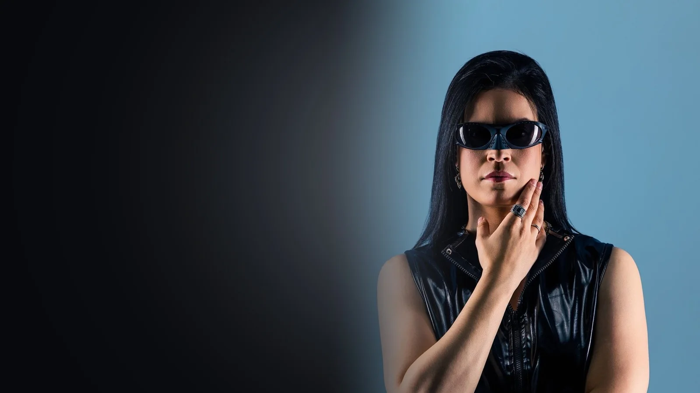
Press kit
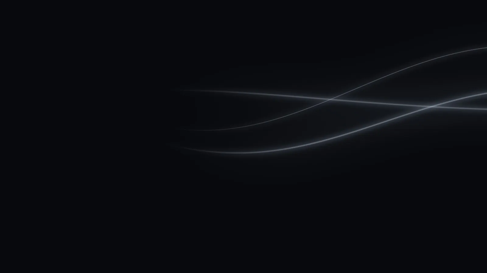
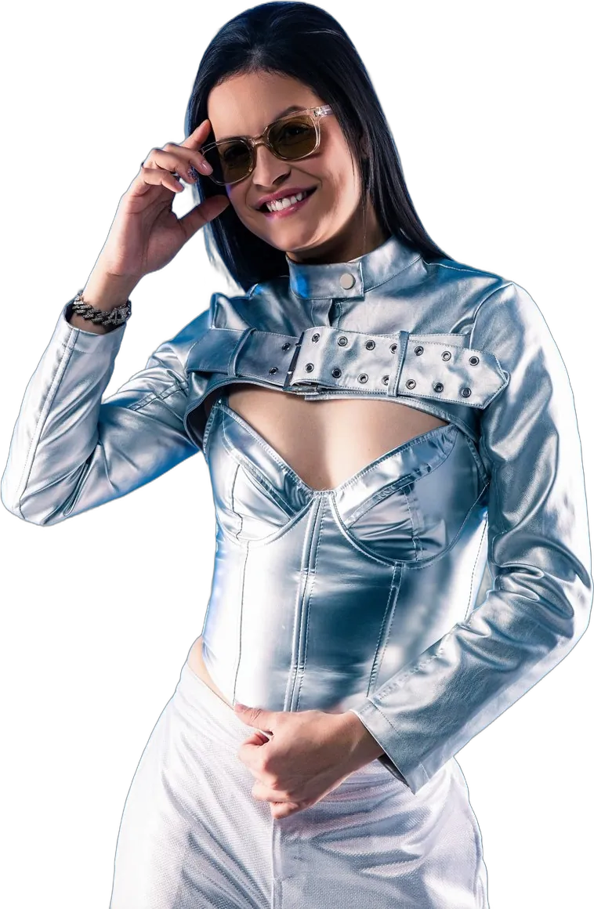
Energia que
move a pista
Jessiika Prates é DJ Open Format. Nasceu em Paraíso do Norte (PR), mora em São José dos Pinhais e começou a tocar em outubro de 2022. Em pouco tempo virou residente da Verdant, maior casa noturna LGBTQIAPN+ do Sul do Brasil, em Curitiba.
Carismática e muito conectada com o público, ela sente o clima da festa e escolhe cada música para manter todo mundo dançando. Já tocou para 50 mil pessoas na Marcha pela Diversidade de Curitiba e hoje estuda produção musical para criar faixas próprias.
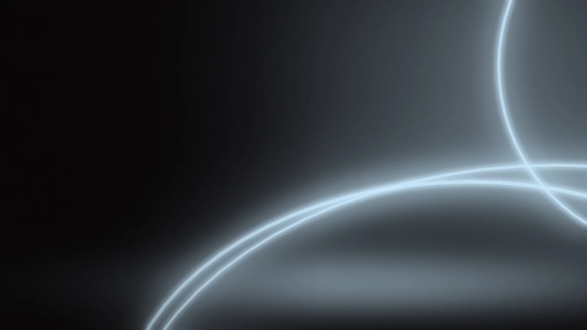
Destaques
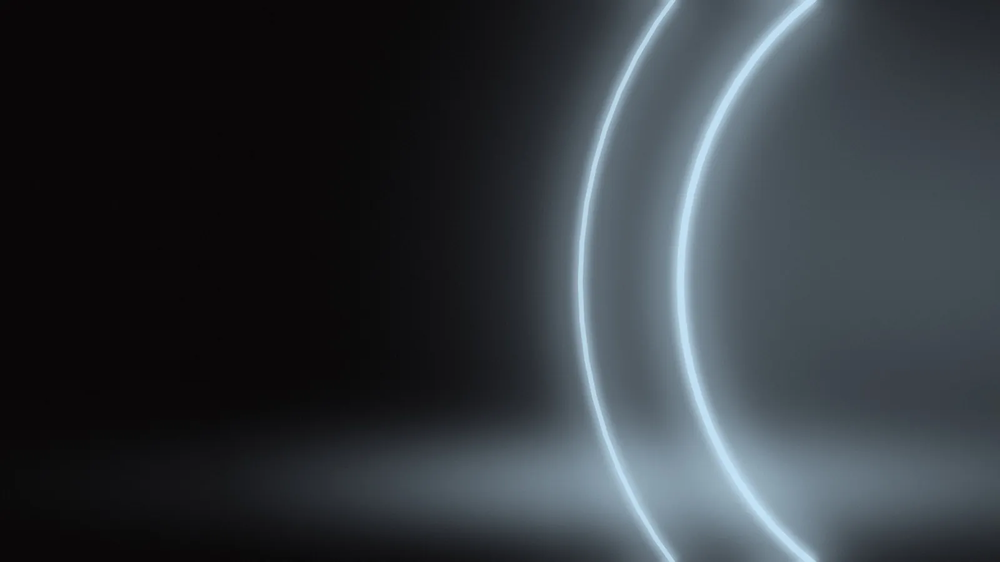
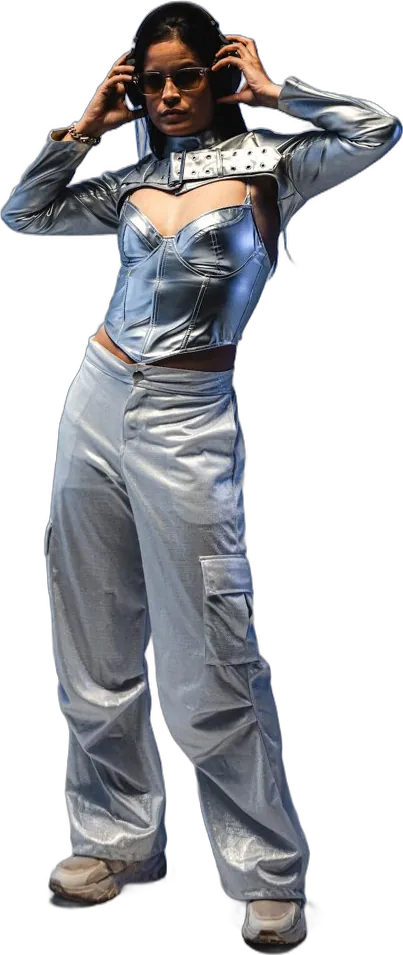
Um set para cada pista
O funk é a especialidade, mas o repertório vai muito além: do pop ao rock, do pagode à música eletrônica, Jessiika adapta a seleção ao público e à proposta de cada evento.
Ouvir sets no SoundCloud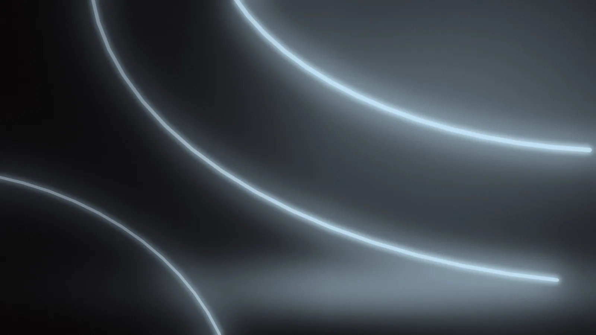
Por onde passou
Dividindo
a pista
Jessiika já esteve no mesmo line-up de nomes conhecidos da cena, em Curitiba e em São Paulo.
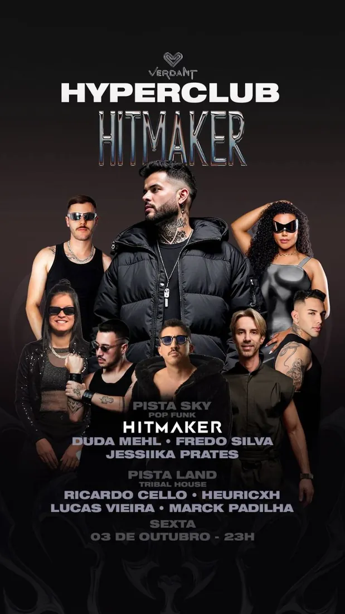
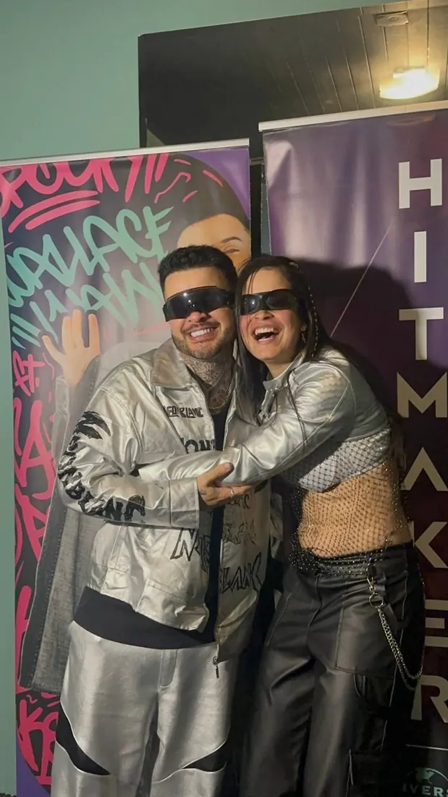
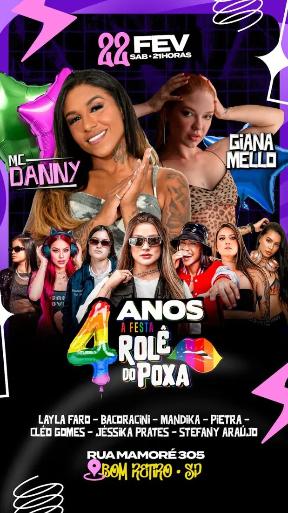
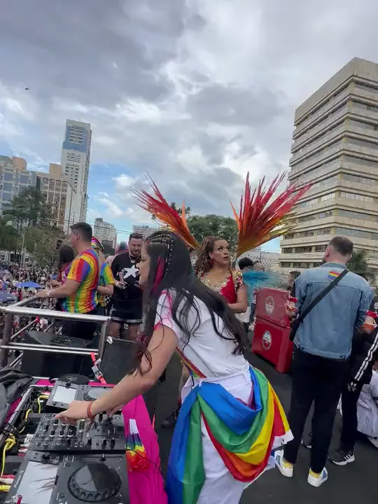
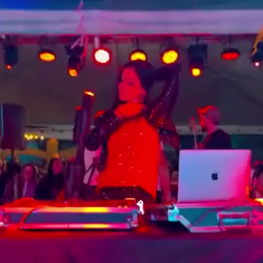
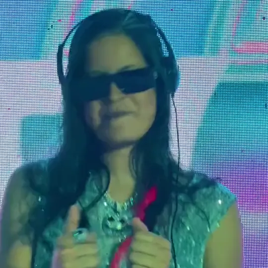
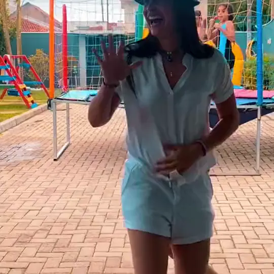
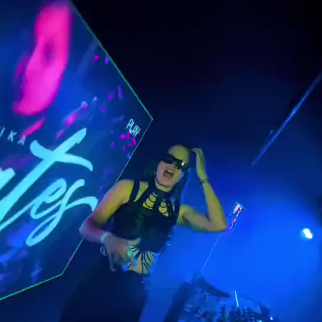
Do trio ao clube
Veja a Jessiika em ação, dos trios elétricos às pistas dos clubes. Os vídeos das apresentações estão reunidos no Instagram dela.
Ver trechos das apresentações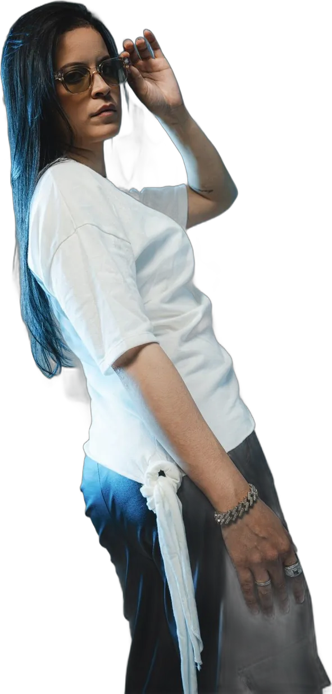
Na mídia
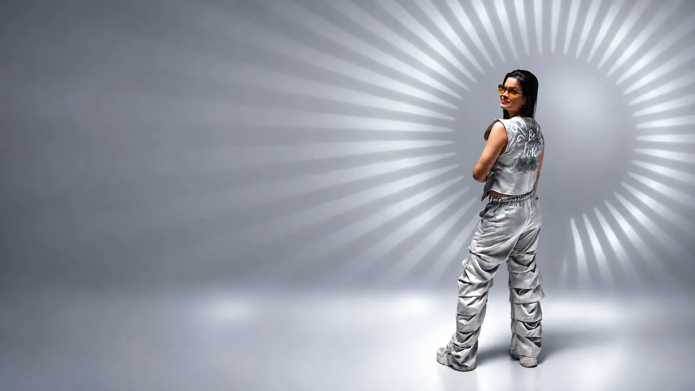
Front da Prates
Quem acompanha a Jessiika já conhece a Front da Prates: a galera que marca presença nas apresentações, acompanha o trabalho pelas redes e faz questão de estar pertinho do palco.
Do jeito da sua festa
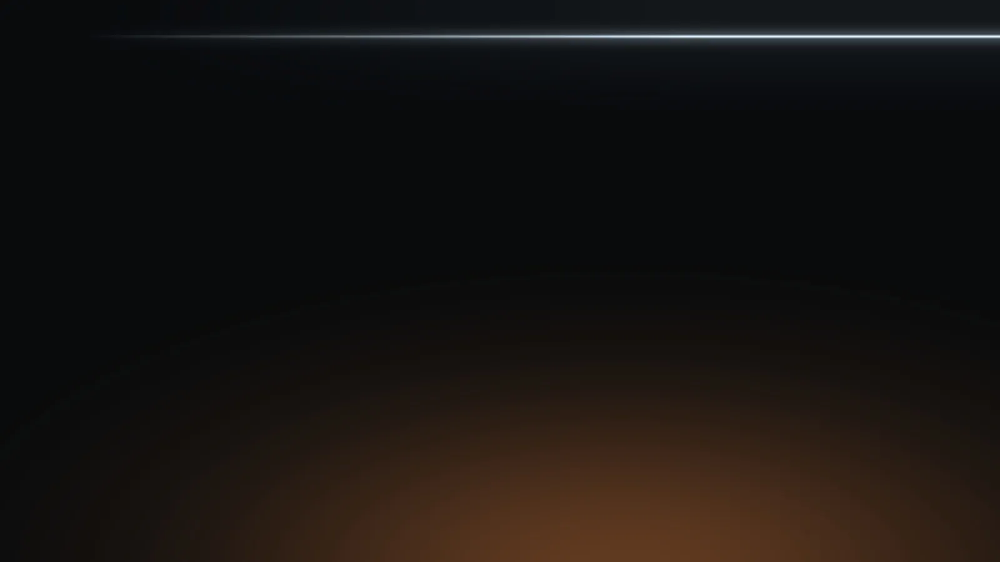
Para os momentos de impacto
Adicional opcional, operado pela equipe da Jessiika. Dá para combinar os efeitos e programar cada um para o momento certo da festa. Uso sujeito à autorização do local.
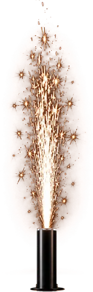
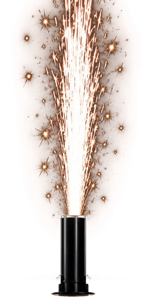
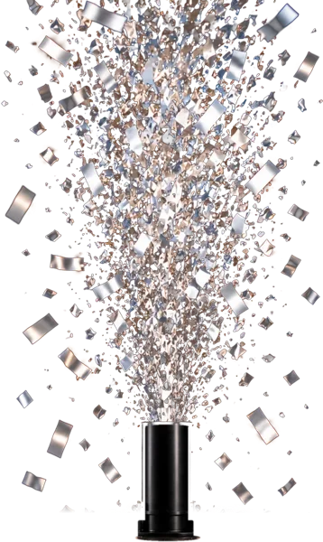
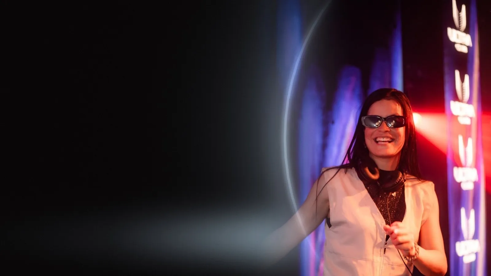
Bora fazer
sua festa?
Fale direto com a Jessiika para datas, valores e formatos de show.
Contratações e informações(41) 99672-1574WhatsApp comercial · toque para abrir a conversaFalar agora